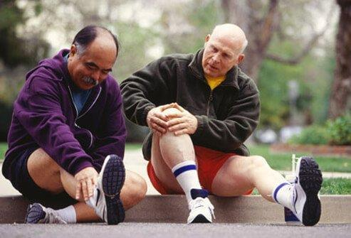
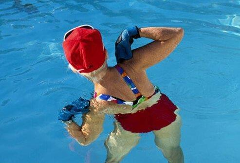
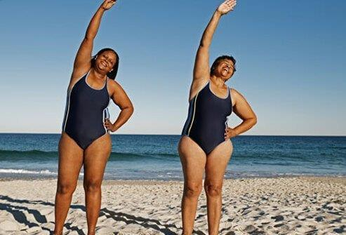
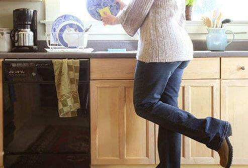
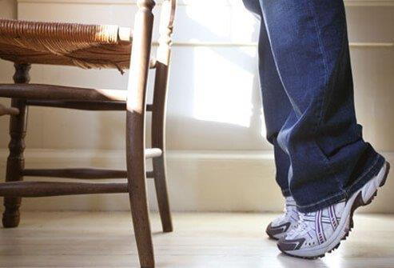
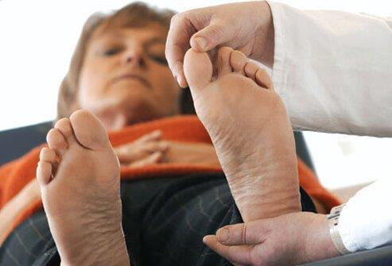
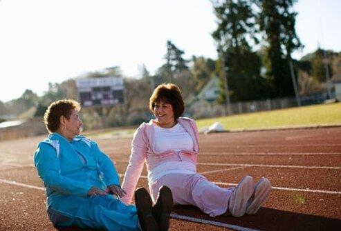
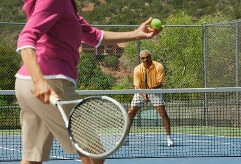
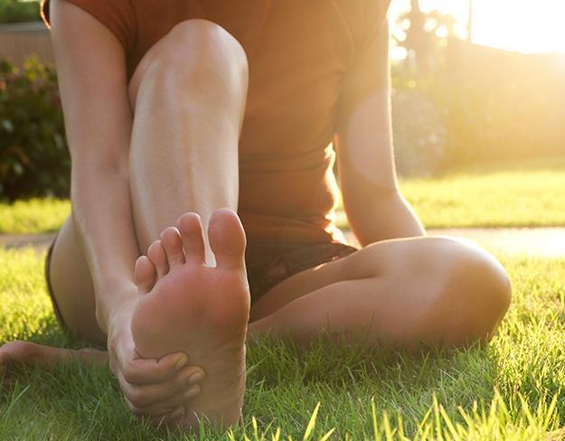

Home / Categoria
Cura, movimento e news
Approfondimenti, schede e guide pratiche: 23 voci collegate alla categoria.

Cura del piede diabetico - Sintomi Hai avuto problemi ai piedi causati dal diabete? Parlaci dei tuoi sintomi. Esercizi per migliorare il dolore ai nervi del diabete Rallentare o prevenire i danni ai nervi del

Se soffri di dolore ai nervi o neuropatia periferica a causa del diabete, ci sono prove che l'esercizio può migliorare o peggiorare il danno ai nervi. Di conseguenza, le persone con diabete dovrebbero sempre parlare con i loro...

Inizia lentamente per superare la paura Per molte persone con diabete e neuropatia periferica, un programma di esercizi regolari è qualcosa che non fanno da tempo. Devi iniziare a fare esercizio, ma inizia lentamente e...

Con la neuropatia periferica, a volte è difficile bilanciarsi. L'equilibrio può essere migliorato lentamente facendo alcuni semplici esercizi. Ad esempio, puoi esercitarti ad alzarti lentamente da una sedia usando le braccia per...

Aumentare la difficoltà di alcuni esercizi può portare a ottimi benefici per chi soffre di neuropatia periferica causata dal diabete. Uno di questi compiti è cercare di stare in equilibrio su una gamba sola. Prima di provare...

Ok, forse camminare sul filo del rasoio è un po' ambizioso! Ma l'equilibrio migliora se ti eserciti a camminare dal tallone alla punta sia in avanti che all'indietro, proprio come fanno i funamboli. Tippy

Man mano che le persone con diabete con neuropatia periferica progrediscono, ci sono altri esercizi che possono migliorare ulteriormente l'equilibrio. Ad esempio, stando vicino a un oggetto fisso stabile (una scrivania o una...

All'inizio della presentazione è stato suggerito che il medico dovrebbe approvare il programma di esercizi. Inoltre, il tuo medico probabilmente controllerà il tuo cuore, occhi e piedi per determinare il miglior tipo di esercizio...

Come affermato nella diapositiva precedente, le persone con diabete con neuropatia periferica dovrebbero prestare particolare attenzione ai loro piedi. In termini di esercizio, un buon paio di scarpe da ginnastica è uno dei modi...

Per quelle persone con diabete con neuropatia periferica o altri problemi, è una buona idea controllare i livelli di glucosio nel sangue prima e dopo l'esercizio. Se la glicemia media è superiore a 250 mg/dL e hai il diabete di...

L'esercizio non dovrebbe essere un lavoro ingrato. Dovrebbe essere goduto. Fai un esercizio che ti piace come nuotare o camminare - qualunque cosa faccia muovere il tuo corpo - aiuterà la tua salute e può essere divertente tanto...
L'esercizio fisico per una persona con diabete, oltre ad essere divertente, può essere anche un evento sociale. Tu e un amico (umano o animale!) potete divertirvi e incoraggiarvi a vicenda ad avanzare lentamente. Partecipare a un...

Una volta acquisita fiducia e un migliore equilibrio, potrebbe essere il momento di intraprendere una nuova attività. Quale attività dipende davvero dal tuo desiderio individuale, ma alcuni suggerimenti includono bowling, ballo,...
Salute Fitness/Esercizio Bambino / Bambini / Giovanile Diabete Fungo dell'unghia del piede Dolore alla palla del piede Gli sport Nutrizione Correre e camminare Novità del settore Salute del piede Prevenzione delle lesioni ai...
Chirurgia Corsa e sport Dolore al piede superiore Arco Tendinite d'Achille / Dolore / Disagio Dolore all'arco / Tensione all'arco Artrite Piede dell'atleta borsiti calli Dito a martello Dolore al tallone Sperone del tallone...
Dolore alle dita dei piedi Mais / Verruca Dolore alla caviglia Unghia del piede / letto ungueale Fa male camminare Tempo di guarigione Frattura Corsa / Jogging Infezione Intorpidimento / Formicolio Sensazione di bruciore crampi...
Vescica Neonato / Neonato / Bambino Dolore/Disagio ai piedi Pelle secca / desquamazione / desquamazione Pelle secca / dura / screpolata Stare in piedi/Lavorare sui piedi Distorsione Anziani / Anziani Rigidità / Stretto / Dolore...
Pelle dura ai piedi? Potrebbe essere una

14 alimenti che possono aiutare a migliorare la circolazione ai
La malattia di Alzheimer e il diabete possono essere correlati 8 consigli per ottenere i massimi benefici dal

COSA FARE IN CASO DI CALLI DURI E SCREPOLATI Che cos'è? Una callosità è una raccolta eccessiva degli strati esterni della pelle. Di solito è una risposta a un'alta pressione ripetitiva su una certa area della pelle. La pelle...
Il dolore nella parte bassa della schiena è associato alle condizioni dei piedi. Che cos'è? La maggior parte delle persone sperimenterà qualche forma di mal di schiena durante la loro vita. I potenziali sintomi del mal di schiena...